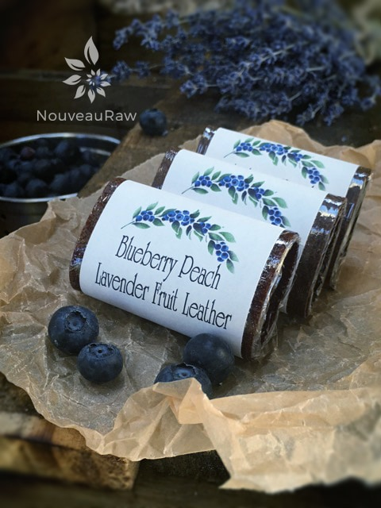

Blueberry Peach Lavender Fruit Leather

~ raw, vegan, gluten-free, nut-free ~
Just a few miles down the road from us, is a lavender farm. It is downright breath-taking as your eyes swim across the ocean of lavender flowers. As you rest your eyes on the horizon, they are still met with the sea of purple, there was no end.
About three weeks ago, I decided to visit the farm since seeing how things grow is a major fascination to me.
They make and sell amazing lavender products but they also give you the opportunity to cut your own flowers so without any hesitancy, I grabbed a pair of shears, a twisty tie (used to create bundles) and made my way out into the endless acres of lavender.
What I didn’t realize until I got up close and personal is that, nestled down in the plants, swarmed tens of thousands of bees! (smacks forehead) DUH! Flowers = bees. But you don’t see them from a distance, and what’s not in sight, is not in mind. Now, I am not afraid of bees necessarily but then I am not one to invite them over for a cup of tea and honey either. (honey, get it…oy-vey lol) It took me only 30 seconds to decide that going home with some of these gorgeous flowers was far more important than fleeing away at a high-speed wobble from the bees!
So, I squatted down beside the plants, yep, I got down to eye level and had myself a little heart to heart talk with the bees. “Now bees, I know that this is just a job to you…somebody has to bring home the bacon, I mean honey BUT there are millions of lavender buds all over this here land, and there is room for you and room for me to explore!
SO, if you won’t sting me, I won’t sting you! Fair enough?” After my chat, I felt confident enough that they would leave me alone. I stood back up, stretched my back, cracked my knuckles, cocked my head left then right, put on a face of determination, armed my hand with the shears, took a deep breath, and bent back over the plants to strategically map out where I could make my cuts to where I wouldn’t disturb the bees. I soon found that it was next to impossible. There were everywhere!!!!
So, without thought, without fear, without hesitation, I blindly jabbed my hand into the plants, grabbed a handful of stems down at the base, and cut away. I repeated this over and over until I felt satisfied with my collection. I bowed and gave my thanks to the bees for honoring my presence and in not stinging me. No one wants to see a grown woman cry, and I don’t think they did either. Haha, What a beautiful experience.
Once home, I admired the flowers on the counter throughout the afternoon, then decided to dry them. I hung them upside down from some twine and about a week later they were completely dried. I then “chucked” the stems, removing the buds and placed them into a quart jar. That provided a lot of lavender buds! That jar alone has brought me tons of inspiration on what to do with them…. soon you will be seeing them pop up in more and more recipes.
yields 5 cups\
- 3 cups organic blueberries
- 3 cups chopped organic peaches, packed
- 1 Tbsp vanilla extract
- 1 tsp ground lavender flower buds
Preparation:
- Select RIPE or slightly overripe peaches and blueberries that have reached a peak in color, texture, and flavor.
- Prepare the peaches; wash, dry, remove stems, and stones.
- Puree the fruit, vanilla, and lavender in the blender or food processor until smooth. Taste and sweeten more if needed. Keep in mind that flavors will intensify as they dehydrate. When adding a sweetener do so a little at a time, and reblend, tasting until it is at the desired taste. It is best to use a liquid type sweetener. Don’t use granulated sugar because it tends to change the texture of the finished fruit leather.
- Spread the fruit puree on teflex sheets that come with your dehydrator. Pour the puree to create an even depth of 1/8 to 1/4 inch. If you don’t
- have teflex sheets for the trays, you can line your trays with plastic wrap or parchment paper. Do not use wax paper or aluminum foil.
- Lightly coat the food dehydrator plastic sheets or wrap with a cooking spray, I use coconut oil that comes in a spray.
- When spreading the puree on the liner, allow about an inch of space between the mixture and the outside edge. The fruit leather mixture will spread out as it dries, so it needs a little room to allow for this expansion.
- Be sure to spread the puree evenly on your drying tray. When spreading the puree mixture, try tilting and shaking the tray to help it distribute more evenly. Also, it is a good idea to rotate your trays throughout the drying period. This will help assure that the leathers dry evenly.
- Dehydrate the fruit leather at 145 degrees (F) for 1 hour, reduce temp to 115 degrees (F) and continue drying for about 16 (+/-) hours. The finished consistency should be pliable and easy to roll.
- Check for dark spots on top of the fruit leather. If dark spots can be seen it is a sign that the fruit leather is not completely dry.
- Press down on the fruit leather with a finger. If no indentation is visible or if the fruit leather is no longer tacky to the touch, the fruit leather is dry and can be removed from the dehydrator.
- Peel the leather from the dehydrator trays or parchment paper. If the fruit leather peels away easily and holds its shape after peeling, it is dry. If the fruit leather is still sticking or loses its shape after peeling, it needs further drying.
- Under-dried fruit leather will not keep; it will mold. Over-dried fruit leather will become hard and crack, although it will still be edible and will keep for a long time
- Storage: To store the finished fruit leather…
- Allow the leather to cool before wrapping up to avoid moisture from forming, thus giving it a breeding ground for molds.
- Roll them up and wrap them tightly with plastic wrap. Click (here) to see photos of how I wrap them.
- Place in an air-tight container, and store in a dry, dark place. (Light will cause the fruit leather to discolor.)
- The fruit leather will keep at room temperature for one month, or in a freezer for up to one year.
Culinary Explanations:
- Why do I start the dehydrator at 145 degrees (F)? Click (here) to learn the reason behind this.
- When working with fresh ingredients, it is important to taste test as you build a recipe. Learn why (here).
- Don’t own a dehydrator? Learn how to use your oven (here). I do however truly believe that it is a worthwhile investment. Click (here) to learn what I use.
© AmieSue.com